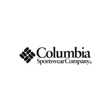

Nuestras Marcas
Columbia
Columbia es una marca estadounidense fundada en 1938. Se ha destacado por su innovación en ropa y calzado para actividades al aire libre, como senderismo y esquí. Su compromiso con la calidad, el rendimiento y la durabilidad la ha convertido en una referencia para los amantes de la aventura en todo el mundo.
Perramus
Perramus es una marca de ropa argentina fundada en 1958 por Héctor Babenco y Juan Carlos Esteves. Su estilo urbano y resistente se convirtió en un ícono de la moda nacional. A lo largo de los años, Perramus ha mantenido su compromiso con la calidad y el diseño, conquistando a generaciones de argentinos.
Nexxt
Nexxt es una marca tecnológica reconocida por su innovación y calidad. Fundada en 2002, se ha convertido en líder en soluciones de redes y conectividad. Sus productos, como routers, switches y adaptadores, ofrecen rendimiento excepcional y fácil instalación. Nexxt sigue siendo la elección confiable para satisfacer las necesidades de conectividad de los usuarios.
Tannery
Tannery es una marca de renombre en la industria del cuero desde hace décadas. Su dedicación a la calidad y la artesanía ha resultado en productos duraderos y elegantes. Con diseños atemporales y materiales de primera calidad, Tannery ha ganado la confianza de los amantes del cuero en todo el mundo.
Oxford Polo Club
Oxford Polo Club es una marca reconocida de ropa y accesorios inspirada en el deporte del polo. Fundada en el siglo XX, combina elegancia clásica con estilo contemporáneo. Su emblemático logo de un jugador de polo a caballo refleja su legado de calidad y sofisticación. Una marca emblemática para los amantes del polo.
Huapi

Huapi es una marca icónica con raíces en la Patagonia. Sus productos artesanales reflejan la herencia ancestral y la conexión con la naturaleza. Sus tejidos de lana y cuero, inspirados en el entorno montañoso, transmiten la calidez y la belleza de la región. Huapi, una marca que abraza la tradición y la autenticidad.